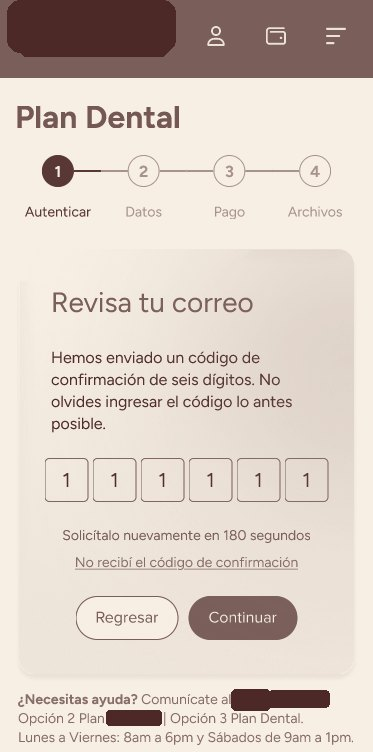
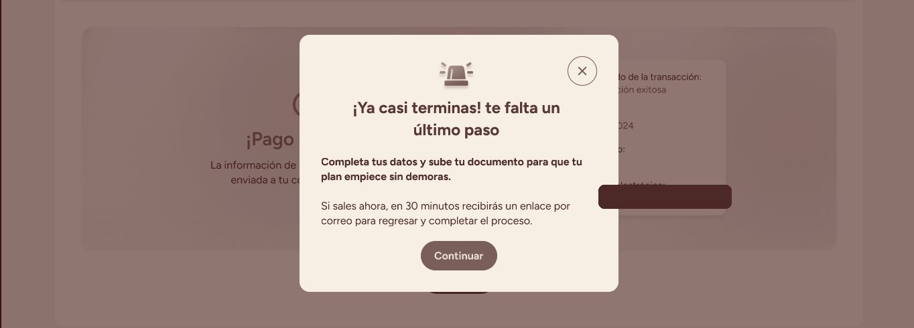

Dos planes, un flujo, ningún asesor
El cliente vendía en línea un plan de salud general y un plan dental, pero toda la compra vivía dentro de una herramienta de terceros embebida. Sus problemas de usabilidad ya estaban diagnosticados cuando llegué. El objetivo de negocio era doble: arreglar la experiencia y dejar de pagarle a un tercero pasando a desarrollo propio del cliente, con un flujo que soportara la autogestión.
Los dos planes eran productos distintos pero compartían casi toda la lógica de venta, así que los diseñé en paralelo y resolví sus diferencias pequeñas dentro de un mismo sistema.
El usuario: alguien comprando cobertura de salud para sí o para su familia, solo, desde el celular o el computador. Documentos, beneficiarios, un código de un solo uso, un pago. La fricción es natural y alta, y el lugar más caro para perder a alguien es justo alrededor del pago.
El camino feliz es la parte fácil
Llevé el flujo desde la landing hasta la confirmación: autenticación con código de un solo uso, datos personales, beneficiarios, pago y carga de documentos, en desktop y responsive. Hice un benchmark de referentes de mercado pensado para el paso a desarrollo propio, y lo usé como insumo de las decisiones de diseño. Descarté varias exploraciones gráficas porque el negocio quería algo visualmente más simple, y las solté.
Lo que nadie había definido era qué pasa cuando algo sale mal: cobertura inválida, límites excedidos, errores de conexión y validación fallida del código. Diseñé esos caminos y los entregué como un artefacto propio, para que desarrollo tuviera contra qué construir más allá del camino feliz.
Los criterios WCAG 2.1 A y AA se aplicaron durante el diseño, no después: los controles de contraste y tamaño de texto se ven en el prototipo desktop.



Probar la hipótesis, no los colores
La prueba tenía una hipótesis escrita: un proceso claro y con la menor cantidad de preguntas antes del pago reduce la probabilidad de abandono. La corrí como prueba remota no moderada en Maze sobre el prototipo de Figma, midiendo comprensión, usabilidad y claridad.
23 participantes de 18 a 60 años (promedio 39), con experticia digital mixta: 49% alta, 38% media, 13% baja.
El éxito alto por tarea escondía dos problemas reales. En la tarea 2, el botón “Agregar beneficiario” era difícil de encontrar y la gente no sabía si la persona había quedado agregada. “Parecía un banner”, escribió alguien; otra persona, “en un punto no sabía si había añadido o no a la otra persona al plan”. Los clics errados, entre 57,6% y 72,8%, contaban lo mismo desde otro ángulo.
La tarea 3 fue la más grande. A la pregunta “¿fue claro que el proceso no había terminado después de pagar?”, 16 personas dijeron que sí y 6 dijeron que no: el 27%.
Fricción donde más cuesta
En este flujo pagar no es el final: la persona todavía tiene que completar sus datos y subir un documento antes de que el plan pueda empezar. Quien se va después de pagar le dio plata a la empresa y no recibe nada a cambio: una afiliación pagada pero incompleta, y una llamada a soporte esperando a ocurrir.
Propuse un paso de continuación obligatoria justo después del pago: “¡Ya casi terminas! Te falta un último paso”, con la razón y una red de seguridad: si sales ahora, en 30 minutos te llega un enlace por correo para terminar.
La objeción
PM y negocio se opusieron: una interrupción justo después de pagar podía confundir a la gente y hacer que abandonara.
El reencuadre
Estaban argumentando el mismo riesgo que yo, pero al revés. Respondí con el resultado de la prueba y con evidencia documentada de cómo este tipo de interacción reduce el abandono, no con mi preferencia.
El paso se adoptó, junto con los otros tres cambios de la prueba: mejor señalización de “Agregar beneficiario”, un botón de guardar con confirmación visible y un mensaje amable de aclaración en el último paso.


Lo que puedo y no puedo mostrar
Lo que me llevé: la evidencia cambia la forma de la conversación. La pregunta dejó de ser “¿agregamos fricción?” y pasó a ser “¿dónde nos cuesta menos la fricción que perder a la persona?”.
Cliente anónimo por confidencialidad. Las pantallas salen de mis archivos de Figma, sin marca, precios ni datos personales, y recoloreadas.